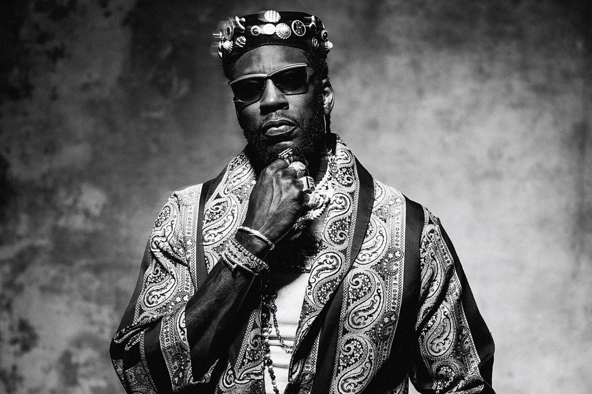

- Music
- Grandma's Hands
- Mary Jane
- Never Abandon Your Family
- Dear Momma
- Feel A Way
- Simple Man
- Family Business
- High Today
- High
Music

Artist: Erick Sermon
Lyrics:Just like music.. Uh-huh, aiyyo yo, uh-huh yeah yeah, uh uh uh There's no doubt, no doubt, no doubt, uh Worrdd up.. Ahhh babyyy.. Just like music.. To relax my mind, so I can be free And ab-sorb sound that keep me 'round Doin my thang, constantly with no worries Peace to Keith Murray.. ("just like music") To keep me flowin and keep me goin and keep me growin, and keep me the E from knowin What happens out there, is not my concern You wanna die it's not my turn ("just like music") To do somethin to me like jump in the Mercedes On the highway, doin over eighty Without music baby.. ("Oww! I'll go crazy.. just like music") Make me call my homey on the phone Like there's somethin new out, that got me in the zone Just that feelin, got me I wish music can adopt me ("just like music") Turn on some music, I got my music Turn on some music, I got my music Turn on some music, I got my music Turn on some music, I got my music - just like music Put me in the mood with my woman Got me in the ear, sayin sweet nothings Make love come out the mouth, no frontin Like all of a sudden, ("just like music") Takin away your worries and cares Any problems, music'll be right there Together match yo, we a perfect pair Is that true Marvin? ("Yeahhhhh! Music") Yo, to get you to bang this Body soul-snatcher, universal language It be the light, so open up This is it, what the fuck? ("just like music") One fly tune That have black and white vibe in one room No confrontation, parlay all night It's just the sensation ("just like music") Turn on some music, I got my music Turn on some music, I got my music Turn on some music, I got my music Turn on some music, I got my music - just like music Music is the soul of the man Music makes a, happy day Music makes a, cloud flow by baby Your music is my tears in-side my eyes (just like music) Your music makes me want to sing Girl music, is a joy to bring (just like music) Music is my heart and soul, more precious than gold (Turn on some music, I got my music) Happiness for days, justice all the way (Turn on some music, I got my music) I love your music baby (I got my music) (Turn on some music, I got my music - just like music) Hey (la-da-da-da-daaaa-dah-dah-dahh) doo-doo, doo-doo-doo Turn on some music (la-da-da-da-daaaa) turn on some music Just like music (la-da-da-da-daaaa-dah-dah-dahh) doo-doo, doo-doo-doo Turn on some music (la-da-da-da-daaaa) turn on some music Just like music (la-da-da-da-daaaa-dah-dah-dahh) doo-doo, doo-doo-doo Turn on some music (la-da-da-da-daaaa) turn on some music Just like music..
This next track reminds me of someone near and dear to my heart.
Please
contact us if you would like more
infomation.
Grandma's Hands

Artist: Bill Withers
Lyrics:Grandma's hands Clapped in church on Sunday morning Grandma's hands Played a tambourine so well Grandma's hands Used to issue out a warning She'd say, Billy don't you run so fast Might fall on a piece of glass Might be snakes there in that grass Grandma's hands Grandma's hands Soothed a local unwed mother Grandma's hands Used to ache sometimes and swell Grandma's hands Used to lift her face and tell her She'd say, Baby, grandma understands That you really love that man Put yourself in Jesus' hands Grandma's hands Grandma's hands Used to hand me piece of candy Grandma's hands Picked me up each time I fell Grandma's hands Boy, they really came in handy She'd say, Matty don' you whip that boy What you want to spank him for? He didn' drop no apple core But I don't have grandma anymore If I get to heaven I'll look for Grandma's hands Hmm-mmh
Mary Jane

Artist: Rick James
Lyrics:Come here, baby Mary I love you, do it girl Mary Jane, Mary Jane I'm in love with Mary Jane She's my main thing She makes me feel alright She makes my heart sing And when I'm feeling low She comes as no surprise Turns me on with her love Takes me to paradise, do you love me Mary Jane? Yeah, whoa-oh-oh Do ya? Do ya? Do ya? Do ya? Do ya? Do ya? Now do you think you love me Mary Jane Don't you play no games Mary Jane, I love her just the same Mary Jane I love her, Mary baby, just the same, Mary Jane The woman plays no games, now, now, now, Mary Jane I'm in love with Mary Jane, I'm not the only one If Mary wanna play around, I let her have her fun She's not the kind of girl that you can just tie down She likes to spread her love and turn your head around Do ya love me Mary Jane, yeah Whoa-oh-oh Do ya? Do ya? Do ya? Do ya? Do ya? Do ya? Now do you think you love me Mary Jane Don't you play no games Mary Jane, I love her just the same Mary Jane I love her, baby, baby, baby, baby, yeah, Mary Jane But Mary plays no games, Mary Jane Yeah, yeah, yeah, yeah, yeah, yeah Yeah oh baby Yeah! Ooohwoo Oh baby, oh baby, hit me Whoa, Mary, only love I love you, yeah, whoo! Something until we give it now, lovey-dove Love baby Uh-huh, wow, baby! Sing! Du-da-da-du-da-dah-dah Du-da-da-du-da-dah-dah Du-da-da-du-da-dah-dah Sing! Du-da-da-du-da-dah-da (oh yeah) Du-da-da-du-da-dah-dah Du-da-da-du-da-dah-dah Sing! Du-da-da-du-da-dah-da Sing it for me baby du-da-da-du-da-dah-da Come Mary, Mary Jane du-da-da-du-da-dah-da Sing it for me baby du-da-da-du-da-dah-da
Rick James- Mary Jane youtube music video link.
Never Abandon Your Family

Artist: Kanye West
Lyrics: Two lessons that he passed along to his children The first is that, no matter what, you never abandon your family The second was that, no matter what, you love unconditionally It is that kind of love that made my father the kind of father and the kind of man he is He vowed that he would never walk away from his family, and he never has You know why my spirit's calling Darkness can't take light from me Haven't you gone far enough? Sacrificed the ones you love Gave up on your sanity Like some twisted fantasy What would I say to everything? Your actions cost everything My, my, my family My family, I'm losing my family I'm losing my family Losing my family Cried out to you in my sleep, you thought it was a dream "Why won't you answer me? I'm in the room" "Tell mom you're sorry, " she's screaming at me "Daddy, how could you leave? Daddy, how could you leave?" "Come back tonight, daddy, please Come back tonight, daddy, please" "Daddy, how could you leave? Daddy, how could you leave?" She don't know what this means, "How'd you become so mean?" I wish I never screamed, "Alcohol when you breathe" These things, these things, these things, these things, they sting "Daddy promise you'll stay, don't you love me? Love me" Two lessons that he passed along to his children The first is that, no matter what, you never abandon your family Is that, no matter what, you never abandon your family Is that, no matter what, you never abandon your family Is that, no matter what, you never abandon your family Is that, no matter what, you never abandon your family Is that, no matter what, you never abandon your family Is that, no matter what, you never abandon your family It is that kind of love that made my father the kind of father and the kind of man he is He vowed that he would never walk away from his family, and he never has
Dear Momma

Artist: 2 Pac
Lyrics: You are appreciated When I was young, me and my mama had beef Seventeen years old, kicked out on the streets Though back at the time I never thought I'd see her face Ain't a woman alive that could take my mama's place Suspended from school, and scared to go home, I was a fool With the big boys breakin' all the rules I shed tears with my baby sister, over the years We was poorer than the other little kids And even though we had different daddies, the same drama When things went wrong we'd blame Mama I reminisce on the stress I caused, it was hell Huggin' on my mama from a jail cell And who'd think in elementary, hey I'd see the penitentiary one day? And runnin' from the police, that's right Mama catch me, put a whoopin' to my backside And even as a crack fiend, Mama You always was a black queen, Mama I finally understand For a woman it ain't easy tryin' to raise a man You always was committed A poor single mother on welfare, tell me how you did it There's no way I can pay you back But the plan is to show you that I understand You are appreciated Lady, don't you know we love you? (Dear Mama) Sweet lady, place no one above you (You are appreciated) Sweet lady, don't you know we love you? Now, ain't nobody tell us it was fair No love from my daddy, 'cause the coward wasn't there He passed away and I didn't cry, 'cause my anger Wouldn't let me feel for a stranger They say I'm wrong and I'm heartless, but all along I was lookin' for a father, he was gone I hung around with the thugs And even though they sold drugs They showed a young brother love I moved out and started really hangin' I needed money of my own, so I started slangin' I ain't guilty, 'cause even though I sell rocks It feels good puttin' money in your mailbox I love payin' rent when the rent's due I hope you got the diamond necklace that I sent to you 'Cause when I was low you was there for me And never left me alone, because you cared for me And I could see you comin' home after work late You're in the kitchen, tryin' to fix us a hot plate You just workin' with the scraps you was given And Mama made miracles every Thanksgivin' But now the road got rough, you're alone You're tryin' to raise two bad kids on your own And there's no way I can pay you back But my plan is to show you that I understand You are appreciated Lady, don't you know we love you? (And dear Mama) Sweet lady, place no one above you (You are appreciated) Sweet lady, don't you know we love you? Pour out some liquor and I reminisce 'Cause through the drama I can always depend on my mama And when it seems that I'm hopeless You say the words that can get me back in focus When I was sick as a little kid To keep me happy there's no limit to the things you did And all my childhood memories Are full of all the sweet things you did for me And even though I act crazy I gotta thank the Lord that you made me There are no words that can express how I feel You never kept a secret, always stayed real And I appreciate how you raised me And all the extra love that you gave me I wish I could take the pain away If you can make it through the night, there's a brighter day Everything will be alright if you hold on It's a struggle every day, gotta roll on And there's no way I can pay you back But my plan is to show you that I understand You are appreciated Lady, don't you know we love you? (Dear Mama) Sweet lady, place no one above you? (You are appreciated) Sweet lady, don't you know we love you? (Dear Mama) Sweet lady Lady (Dear Mama) Lady, lady
Feel A Way
Artist: 2 Chainz
Lyrics: A nigga never learned to say I be ballin' anyway (I be ballin' any) God don't make no mistakes God don't make no mistakes (uh, uh) A nigga never learned to say I be ballin' anyway (yeah, swish) God don't make no mistakes This life is give and take Needed somethin' wavy to get my point across (yea) I work for myself so I guess I work for a boss Look up at the scoreboard, it'll tell you who took a loss Aim it at your Adam's apple, turn it to apple sauce (sauce) Yeah, cats done turned Peter street in the motor cross (skrt) Last one with Def Jam but I'm still goin' off (I'm still goin' off) And it ain't about my masters, I been ownin' mine Had a white friend mad at me because I know Farrakhan (boom) And you know this is a hit, Berry Bonds And my shawty gonna ride me like a Peloton (ride) Sophomore year I sold more crack than a windshield (shield) Dunk contest jumped over a lamb and did a windmill (jump) They ask me how I feel, I told them never better (better) Smokin' on opp, I roll more L's than Pelle Pelle I stay fly, yes, I'm fly, land on Mike Pence I do some stupid shit, don't let them dog me like Mike V A nigga never learned to say (yeah, uh) I be ballin' anyway (uh, all anyway) God don't make no mistakes (respect it) This life is give and take (uh, uh, Southside) Don't let them make you feel a way Could've freed more if they only knew that they were slaves (slaves) Man, we gotta get away Man, your boy done caught a way You should hear the way I say (Southside) Talk, talk, talk to them people Man, y'all don't even know the language Man, I ain't finna do no lame shit This a yacht and that's a long way from a slave ship How they control our mind? (mind) How they control us though? (What?) How they get us so (uh), so emotional You think you Natt Turner What you want the folks to know (When Larry Jackson called They let Frank Ocean go) Middle name Mandela Me and mama sold dope together I can't hear you, Helen Keller Since fifteen I've been a felon A felon can vote, spread the message Exhale acapella I still throw my diamond up Oh, you still reppin' Roc-A-Fella Me and Dame in the studio, diamond up (what up Dame?) Me and Biggs in the studio, time is up (what up Biggs?) Wooh and I bet they feel a way Thirteen thousand acres, I don't know where to stay (Southside) A nigga never learned to say (yeah, uh) I be ballin' anyway (ball anyway) God don't make no mistakes (respect it) God don't make no mistakes (uh, uh) A n- never learned to say (yeah, uh) I be ballin' anyway (uh, ball anyway) God don't make no mistakes This life is give and take (uh, uh)
Simple Man

Artist: Lynrd Skynrd
Lyrics:Mama told me when I was young Come sit beside me my only son And listen closely to what I say And if you do this it'll help you Some sunny day oh yeah Oh take your time don't live too fast Troubles will come and they will pass Go find a woman yeah and you'll find love And don't forget son there is someone up above And be a simple kind of man Oh be something you love and understand Baby be a simple kind of man Oh won't you do this for me son if you can Forget your lust for the rich man's gold All that you need is in your soul And you can do this oh babe if you try All that I want for you my son is to be satisfied And be a simple kind of man Oh be something you love and understand Baby be a simple kind of man Oh won't you do this for me son if you can Oh yes I will Oh don't you worry you'll find yourself Follow your heart and nothing else And you can do this oh babe if you try All that I want for you my son is to be satisfied And be a simple kind of man Oh be something you love and understand Baby be a simple kind of man Oh won't you do this for me son if you can And baby be a simple real simple man Oh be something you love and understand Baby be a simple kind of man
Family Business
Artist: Kanye West
Lyrics:How's your son? (All, all, all the things, things) He make the team this year? (All, all, all the things things) Aw th-, they said he wasn't tall enough? (All, all, all that glitters is not gold) Yeah, me we gon' cook this up (All gold is not reality) Sunday okay? Just come by That's your new girlfriend? This is family business And this is for the family that can't be with us And this is for my cousin locked down, know the answer's in us That's why I spit it in my songs so sweet Like a photo of your granny's picture Now that you're gone it hit us Super hard on Thanksgiving and Christmas, this can't be right Yeah, you heard the track I did man, "This Can't Be Life" Somebody please say grace so I can save face And have a reason to cover my face I even made you a plate, soul food, know how Granny do it Monkey bread on the side, know how the family do it When I brought it why did the guard have to look all to it? As kids we used to laugh Who knew that life would move this fast? Who knew I'd have to look at you through a glass? And look, you tell me you ain't did it, then you ain't did it And if you did, then that's family business And I don't care 'bout (All the, all the diamond rings, diamond rings) They don't mean a thing (All, all, all the things) All these fancy things I tell you that all my weight in gold (Now gold is not reality) Now all I know, I know, all these things This is family business And this is for everybody standin' with us Come on, let's take a family Grammy picture Abi, remember when they ain't believe in me? Now she like, "See, that's my cousin on TV" Now, we gettin' it and we gon' make it And they gon' hate it and I'm his favorite I can't deny it, I'm a straight rider But when we get together be electric slidin' Grandma, get 'em shook up Aw naw, don't open the photo book up I got an Aunt Ruth that can't remember your name But I bet them Polaroids'll send her down memory lane You know that one auntie, you don't mean to be rude But every holiday nobody eatin' her food And you don't wanna stay there 'cause them your worst cousins Got roaches at their crib like them your first cousins Act like you ain't took a bath with your cousins Fit three in the bed while six of y'all I'm talkin' 'bout three by the head and three by the leg But you ain't have to tell my girl I used to pee in the bed Rain, rain, rain go away Let the sun come out and all the children say Rain, rain, rain go away Let the sun come out and all the children say I woke up early this mornin' with a new state of mind A creative way to rhyme without usin' knives and guns Keep your nose out the sky, keep your heart to God And keep your face to the risin' sun All my niggas from the Chi, that's my family dog And my niggas ain't my guys, they my family dog I feel like one day you'll understand me dog You can still love your man and be manly dog You ain't got to get heated at every house warmin' Sittin' here, grillin' people like George Foreman Why Uncle Ray and Aunt Sheila always performin'? The second she storm out, then he storm in Y'all gon' sit down, have a good time this reunion And drink some wine like Communion And act like everything fine and if it isn't We ain't lettin' everybody in our family business, uh They don't mean a thing (All, all, all the things) They don't mean a thing (All all that glitters is not gold, now gold is not reality) They don't mean a thing, a thing And I don't care what they don't mean a thing (All, all, all the things) All these fancy things I tell you that all is my weight and gold All I know, I know all these things All these things, all these things All these things, all these things CLK Mercedes Benz All these things, all these things All these things, all these things All these things, all these things All these things, all these things All these things, all these things All these things, all these things All these things, all these things Mommy and Daddy, will you please stop fighting? All these things, all these things All these things, (and I don't care why) all these things All these things, all these things All these things, all these things... Let's get Stevie outta jail
High Today

Artist: Wiz Khalifa
Lyrics:Where is my mind? It's far away Up in the sky, I'm high today Break it on down, then we rollin' it up I can see my house from up here Who needs a jet when you fly like me? Tell 'em You don't need a jet to get high like me I started off slow but I finally made it No matter the cost, chances I'm takin' Ride with my dawgs, no we ain't fakin' Travel the world, countin' up faces Jump in my car, roll up and facin' No I don't call, I'm on her faces All of 'em model, none of 'em basic Girl I'm a star, look in amazement Top of the game, that's where my place is Started off small, runnin' from cases Can't take it back, I can't erase it Money got long, I'm tryna chase it Puffin' the J, I wanna get paid This one and the same but that's every day I'm livin' my life, as real as I say I spent it all once, so I'm tryna save I'm rollin' that dank, she pourin' that drank I'm out of my brain, weed got me all faded I'm lovin' my life, I'm never gon' traded I want success, don't wanna be famous Know how to stay on your grind, it's contagious Rollies with diamonds for time that is takin' People these days, they easily change But I stay the same 'cause life's what you make it I started off slow but I finally made it No matter the cost, chances I'm takin' Ride with my dawgs, no we ain't fakin' Travel the world, countin' up faces Jump in my car, roll up and facin' No I don't call, I'm on her faces All of 'em model, none of 'em basic Girl I'm a star, look in amazement Where is my mind? It's far away Up in the sky, I'm high today Break it on down, then we rollin' it up I can see my house from up here Who needs a jet when you fly like me? Tell 'em You don't need a jet to get high like me From the sun up to the sun down No, we never come down Bobby Boy loud, when he come around Drivin' down Malibu Stay driven like the valet do, I be cruisin' Steady winnin' but I'm playin' like I'm losin' I know that this shit can be confusin' Talkin' rap, talkin' life, talk and chosin' Money over happiness, abusin' Losin' your mind Losin' your heart Second that I wake up, I feel like this world just wants to tear me apart But I don't Let it get me down Let it fuck me up What my therapist say They don't matter, no way I started off slow but I finally made it No matter the cost, chances I'm takin' Ride with my dawgs, no we ain't fakin' Travel the world, countin' up faces Jump in my car, roll up and facin' No I don't call, I'm on her faces All of 'em model, none of 'em basic Girl I'm a star, look in amazement
High

Artist: Young Thug
Lyrics[Chorus: Elton John, Young Thug & Both] And I'm gonna be high (super geeked!) Like a rocket man, hey, like a rocket man, he-ey! And I'm gonna be hi-i-i-i-i-i-igh I'm a rocket man (hi-i-i-i-i-i-igh) High as a plane! From Spain to Maine, you know what I'm sayin'? Damn [Verse 2: Young Thug & Elton John] On a private order (yeah) I'm a rocket launcher (yeah) It gotta be the pride of something (bet) I walked out Magic stumbling (I'm a rocket man, woah) I stumble upon a mil' (yeah) I stumble upon a million five I spent a fortune all on double seals If I tell you the numbers you'll probably cry (And I'm gonna be-) If I tell you you fake then you'll probably die These days if he say that he hit then he probably lyin' (I'm a rocket man, woah) If you say you got wings and some fish then you probably fried (that's deep) Got my karats out of Bonnie & Clyde (woo! And I'm gonna be-) She let me back in like she never cried She let me back in like I never lied I look like a cat with 11 lives I really kick shit you can ask a fly (I'm a rocket man) I'm steady chasing like I'm never tired I'm living scary like a haunted house Lil mama sexy, I got butterflies, hey [Chorus: Elton John, Young Thug & Both] And I'm gonna be high (hi-i-i-i-i-i-i-i-i-igh) I'm a rocket man, I'm the rocket man, hey! (yeah! yeah!) And I'm gonna be hi-i-i-i-i-i-i-i-igh-igh, yea-yeah I'm a rocket man Hi-i-i-i-i-i-i-i-igh (ye-yea-yea-yeaah, yeah, yea-ah) [Outro: Elton John] And I'm gonna be high I'm a rocket man